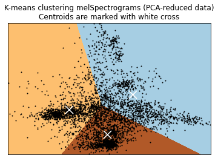

This document will walk you through the concepts, ideas and scripts of this project in order to reproduce our results. In this folder you will find all the info/scripts necessary to go from Hitachi's .wav files to a train convolution neural net saved as hdf5.
The goal of this project is to be able to apply Machine Learning on sound recordings from a machine to obtain a model for real time inference on the Edge. Given this context, we have focused on developing a Machine Learning model for sound classification based on the MIMII dataset created by Hitachi.
In their expirement, they recorded the sound of various machines during normal functioning as well as during certain failures. For each type of machine they have recorded the sound of 4 seperate machines using eight microphones, adding three types of white noise independently (-6db, 0db, +6db). The sound recordings were saved in samples of 10s 0ms in .wav format. The .wav files are saved in either a "normal" or "abnormal" folder depending on wether the machine had an issue during recording. We have focused on one type of machine as this is a demo project, specifically on their sound recordings for a fan. They test for 3 types of problems for the fan: Voltage change, Imbalance and Clogging. The total dataset should amount to:
3 (Types of white noise) x 4 (Number of independent machines) x 2 (normal & abnormal folders for .wav files) = 24 subfolders
For more information on their expriment and the data:
https://zenodo.org/record/3384388
Although one could see the direct use of classifying normal & abnormal sounds of a machine, we took it one step further. We've developed a model that could not only identify abnormal sounds but infer what problem specifically is occuring, as we agreed it would be of bigger added value than classic binary classification.
The .wav files organized in their respective folders can be downloaded from the link above as .zip archives. The way we handled it, to avoid downloading locally then uploading to the cload, was to download them directly on our compute instance on Azure ML (you also get datacenter bandwidth for faster download). To do this, we simply open a terminal after launching our compute instance on AMLS. From there we either wget or curl the download links from the folders we previously created for each type of white noise added.
links for download : - https://zenodo.org/record/3384388/files/6_dB_fan.zip?download=1 - https://zenodo.org/record/3384388/files/-6_dB_fan.zip?download=1 - https://zenodo.org/record/3384388/files/0_dB_fan.zip?download=1
# install jar because classic unzip doesn't work too well
apt-get update
apt-get install fastjar
# create folders for each type of white noise, or do it directly in AMLS
mkdir data66db
mkdir data6db
mkdir data0db
# Download zip archives
# Before you download file, cd to the adequate folder
curl -L yourLinkHere -o fan.zip
# unzip fan.zip
jar xvf fan.zip
# repeat for 3 types of white noise
You should now have 3 folders (data0db, data6db, data66db for each type of white noise) containing subfolders of all the independent machines themselves containing folders of normal and abnormal sounds.
A common approach to analysis & machine learning applied to audio is to use MelSpectrograms. In short, they are a numerical representation of a signal in both its time & frequency domain. I won't be detailing on the mathematical concepts behind it, but I do reccomend hevily to understand what they are before going on with the project. A good vulgarization can be found here: https://medium.com/analytics-vidhya/understanding-the-mel-spectrogram-fca2afa2ce53 In the article you will also find a link to a video from 3Blue1Brown on the Fourier Transform, an essential mathematical tool in the computation of a MelSpectrogram (highly recommended).
What we need to do is to compute the MelSpectrogram for every .wav file we have. To easily do this, we first generate metadata on the paths to each file, with the information on whether the sound is abnormal or not. The below class does exactly that and saves the metadata as .csv:
tuto/PreProcessing/metaPipeline.py
import pandas as pd
import os
import glob
class PipelineMeta():
def __init__(self):
"""
Initialize class with paths to normal/abnormal .wav files
"""
self.paths=[
"data0db/fan/id_00",
"data0db/fan/id_02",
"data0db/fan/id_04",
"data0db/fan/id_06",
"data6db/fan/id_00",
"data6db/fan/id_02",
"data6db/fan/id_04",
"data6db/fan/id_06",
"data66db/fan/id_00",
"data66db/fan/id_02",
"data66db/fan/id_04",
"data66db/fan/id_06",
]
def datasetGenerator(self,
targetDir,
normalDirName="normal",
abnormalDirName="abnormal",
ext="wav"):
"""
For a given path, define path to each .wav, noting information on normal/abnormal
input
targetDir: path to ind. machine
normalDirName: name for normal .wav files
abnormalDirName: name for abnormal .wav files
ext: extension for audio files
output
normalSet: pandas dataframe contaning file path to all normal .wav audio files of targetDir
abnormalSet: same as normalSet, but for abnormal .wav
"""
# 01 normal list generate
normalFiles = sorted(glob.glob(
os.path.abspath("{dir}/{normalDirName}/*.{ext}".format(dir=targetDir,
normalDirName=normalDirName,
ext=ext))))
normalLabels = False
# 02 abnormal list generate
abnormalFiles = sorted(glob.glob(
os.path.abspath("{dir}/{abnormalDirName}/*.{ext}".format(dir=targetDir,
abnormalDirName=abnormalDirName,
ext=ext))))
abnormalLabels = True
normalSet = pd.DataFrame({"filePath":normalFiles,"label":normalLabels})
abnormalSet = pd.DataFrame({"filePath":abnormalFiles,"label":abnormalLabels})
return normalSet, abnormalSet
def metaGenerator(self, save=False, metaFileName="Meta.csv"):
"""
Method to loop through all individual independent machines for all 3 types of added white noise
input
save: Boolean parameter to save output of method (metadata dataframe) as csv
metaFileName: name for .csv if save=True
output
meta: Dataframe containing filepaths to every .wav in given paths (self.paths from __init__)
"""
normalSet, abnormalSet = self.datasetGenerator(self.paths[0])
meta = normalSet.append(abnormalSet)
for path in self.paths[1:]:
normalSet, abnormalSet = self.datasetGenerator(path)
meta = meta.append(normalSet.append(abnormalSet))
if save:
meta.to_csv(metaFileName, index=0)
return meta
def __str__(self):
return 'class to retrieve filepath and sound type metadata and save as Pandas dataframe'
if __name__=='__main__':
meta=PipelineMeta()
meta.metaGenerator(save=True)
We also provide some script to investigate the characteristics of the .wav files:
tuto/PreProcessing/soundCharacteristics.py
import struct
import pandas as pd
from metaPipeline import PipelineMeta
class WavFileHelper(PipelineMeta):
def __init__(self, metaFileName='Meta.csv'):
"""
Initialize class, try to load meta.csv containing filepath metadata
Upon failure inherit from PipelineMeta() and generate missing metadata
input
metaFileName: Name of saved metadata dataframe
"""
try:
self.wavMeta = pd.read_csv(metaFileName)
except Exception as e:
print(e, "\n", "meta.csv does not exist, generating it.")
super().__init__()
metaObj = PipelineMeta()
self.wavMeta = metaObj.metaGenerator(save=True)
def FileProperties(self, filename):
"""
Using struct library extract basic properties of given .wav file.
input
filename: name of .wav to inspect
output
numChannels: Number of channels used to record audio
sampleRate: Sample rate of audio
bitDepth: Bit depth of audio file
"""
waveFile = open(filename,"rb")
riff = waveFile.read(12)
fmt = waveFile.read(36)
numChannelsString = fmt[10:12]
numChannels = struct.unpack('<H', numChannelsString)[0]
sampleRateString = fmt[12:16]
sampleRate = struct.unpack("<I",sampleRateString)[0]
bitDepthString = fmt[22:24]
bitDepth = struct.unpack("<H",bitDepthString)[0]
return (numChannels, sampleRate, bitDepth)
def readFileProperties(self):
audioData = []
for index, row in self.wavMeta.iterrows():
fileName=row['filePath']
data = self.FileProperties(fileName)
audioData.append(data)
audioDf = pd.DataFrame(audioData, columns=['numChannels','sampleRate','bitDepth'])
numChannels = audioDf.numChannels.value_counts(normalize=True)
sampleRate = audioDf.sampleRate.value_counts(normalize=True)
bitDepth = audioDf.bitDepth.value_counts(normalize=True)
characteristics = {
"number of channels":numChannels,
"sample rate":sampleRate,
"bit depth":bitDepth
}
return characteristics
def __str__(self):
return 'Class to extract .wav properties (sample rate, num channels, bit depth)'
if __name__=="__main__":
audioProp = WavFileHelper()
audioProp.readFileProperties(metaFileName="meta.csv")
For each filepath we have generated in the metadata, we use the mfcc class from the librosa package, which is a feature to extract a MelSpectrogram from an audio file quite easily. We should end up with a Pandas DataFrame containing:
As a later benefit to train/test/val accuracy when fitting our model, we also applied data augmentation. Similar to what is done with images, we modify slightly the input audio we have to generate more samples. In our case, we stretch, roll and more white noise (seperately) to each .wav file, mutliplying the size of our dataset by 4. This is automated with the following class that inherits from WavFileHelper, which itself inherits from PipelineMeta:
tuto/FeatureExtraction/melSpecExtraction.py
from PreProcessing.metaPipeline import PipelineMeta
import pandas as pd
import numpy as np
import librosa
class MelSpectrogram(PipelineMeta):
def __init__(self, metaFileName='Meta.csv'):
"""
Initialize class, try to load meta.csv containing filepath metadata
Upon failure inherit from PipelineMeta() and generate missing metadata
input
metaFileName: Name of saved metadata dataframe
"""
try:
self.meta = pd.read_csv(metaFileName)
except Exception as e:
print(e, "\n", "meta.csv does not exist, generating it.")
super().__init__()
metaObj = PipelineMeta()
self.meta = metaObj.metaGenerator(save=True)
def dataAugmentation(self, audio):
"""
Method to augment data by:
- Adding white noise (at random)
- Rolling audio
- Stretching audio
input
audio: Extracted audio from .wav
output
audioWn: White noise added audio
audioRoll: Rolled audio
audioStretch: Stretched audio
"""
# white noise
wn = np.random.randn(len(audio))
audioWn = audio + 0.005*wn
# shifting
audioRoll = np.roll(audio, 1600)
# Stretching
audioStretch = librosa.effects.time_stretch(audio, rate=1)
return audioWn, audioRoll, audioStretch
def pad(self, mfccs, padWidth=2):
"""
Classic padding for DL
input
mfccs: MelSpectrogram of given audio
padWidth: Width of padding to be applied
"""
return np.pad(mfccs, pad_width=((0, 0), (0, padWidth)), mode='constant')
def mfccGenerator(self, filePath, augment=True):
"""
Method to extract audio and compute MelSpectrogram for given .wav.
input
filePath: Path to .wav
augment: Boolean parameter, if True apply augment() method.
output
if augment:
mfccs, mfccsWn, mfccsStretch, mfccsRoll: Padded MelSpectrograms
for original audio & augmented versions
else:
mfccs: Padded MelSpectrogram for original audio
"""
audio, sampleRate = librosa.load(filePath, res_type='kaiser_fast')
mfccs = librosa.feature.mfcc(y=audio, sr=sampleRate, n_mfcc=40)
if augment:
Wn, Roll, Stretch = self.dataAugmentation(audio)
mfccsWn = librosa.feature.mfcc(y=Wn, sr=sampleRate, n_mfcc=40)
mfccsRoll = librosa.feature.mfcc(y=Roll, sr=sampleRate, n_mfcc=40)
mfccsStretch = librosa.feature.mfcc(y=Stretch, sr=sampleRate, n_mfcc=40)
return self.pad(mfccs), self.pad(mfccsWn), self.pad(mfccsStretch), self.pad(mfccsRoll)
else:
return self.pad(mfccs)
def save(self, dataFrame, fileName="totalAugmentedDf.npy"):
"""
Method to save adequatly numpy arrays of arrays in pandas Dataframe using
numpy binary format. (Pandas built-in .to_csv() will show problems)
input
dataFrame: Pandas DataFrame to save
fileName: name to give to numpy binary containing DataFrame
"""
temp = dataFrame.copy().to_numpy()
np.save(fileName, dataFrame, allow_pickle=True)
def getMfccs(self, augment=True, save=True):
"""
Method to extract audio and compute MelSpectrograms recursively on all filepaths
contained in metadata.
input
augment: Boolean parameter to be passed to mfccGenerator method() for augmenting data
save: Boolean parameter to save resulting pandas DataFrame
output
melSpecDf: Pandas DataFrame containing MelSpectrograms, metadata, booleans to
indicate wether data is for model validation and or if data is
an augmented version or not
"""
features = []
for i in range(len(self.meta)):
valData = False
if i%1000 == 0:
print(i)
filePath = self.meta.loc[i,"filePath"]
if filePath == "data0db/fan/id_06":
valData=True
classLabel = self.meta.loc[i,"label"]
if augment:
mfccsWn, mfccsRoll, mfccsStretch, mfccs = self.mfccGenerator(filePath, augment=augment)
augmented = False
features.append([mfccs, classLabel, filePath, valData, augmented])
augmented = True
features.append([mfccsWn, classLabel, filePath, valData, augmented])
features.append([mfccsRoll, classLabel, filePath, valData, augmented])
features.append([mfccsStretch, classLabel, filePath, valData, augmented])
else:
mfccs = self.mfccGenerator(filePath, augment=augment)
features.append([mfccs, classLabel, filePath, valData])
melSpecDf = pd.DataFrame(features, columns=['feature',
'classLabel',
'filePath',
'valData',
'augmented'])
if save:
self.save(melSpecDf)
return melSpecDf
def __str__(self):
return 'Class that will load audio data, augment it if paremeter boolean "augment" is set to True, retrieve mfccs for the audio(s), pad them, label them and add meta information (augmented, validation data) as well as save under npy (numpy binary) if parameter boolean "save" is set to True'
if __name__== "__main__":
melSpectrogram = MelSpectrogram()
melSpectrogram.getMfccs(augment=True, save=True)
From this point on, we could simply pass it to a CNN and train it to classify normal from abnormal sounds. However, given an interesting insight on the different types of problems they recorded the fan's sound for we could potentially train a model to detect those specific failures. We unfortunately do not have this multi class label, however it is possible to artificially generate it.
Indeed, under the hypothesis that the sound a fan makes when it is malfunctioning differs depending on the type of problem, the MelSpectrograms for these abnormal sounds should differ. If they indeed do differ, we could typically use clustering to seperate them according to that.
Now given the very high dimensionality of the MelSpectrograms we generated, we could face some issues when clustering them. To aleviate this problem, we used PCA to obtain the n most representative eigenvectors of each MelSpectrogram. Looking at the bias-variance trade-off, we easily see that at most two principal components should be considered.
Do note that we have applied dimensionality reduction & clustering ONLY on abnormals sounds as a means to generate multiple failure labels for each type of failure as well as ONLY on the non-augmented audios. This is to avoid having different cluster for the same audio simply due to the morphing we apply to it. Once the label is generated for a given .wav, we can simply expand to its augmented versions.
If we plot the data according to their two most representative principal components we obtain the following swarm plot:

It's hard to detect the different clusters here, however we know from Hitachi's paper that there are roughly 3 types of failures they have recorded for. We thus assume the clustering algorithm to detect 3 clusters. Looking at the elbow method, it seems we coudl maybe even define 4 clusters.

However this method on its own is not accurate and actual knowledge of the number of clusters to expect surpass it.
There are many choices among clustering methods, we have used KMeans here for the sake of simplicity. The resulting algorithm gives us the following groups:

If we plot for each cluster the distance to centroid for each point we obtain the following distribution plot:

The distribution is skewed to the left for each cluster, which is exactly what we want. It basically means that overall the distance to the centroid of a cluster for each point within the cluster is generally low and homogenous. As a "verification procedure", we even downloaded .wav files from each cluster to listen and see if there are any noteable differences. And we can clearly hear a difference of pitch of some sorts across abnormal sounds. If you want to check them out for yousrelf, here is an example .wav for each class:
We then create a label and set it to 0 in the normal sound MelSpectrograms. After that we simply merge them with the MelSpectrograms and multiclass labels of the abnormal sounds to obtain a full mutli class labeled dataset of our audios. All the above is implemented with the below class:
tuto/FeatureExtraction/labelGeneration.py
import numpy as np
import pandas as pd
from melSpecExtraction import MelSpectrogram
import matplotlib.pyplot as plt
import seaborn as sns
from sklearn.cluster import KMeans
from sklearn.decomposition import PCA
from sklearn.preprocessing import StandardScaler
class GenerateLabel(MelSpectrogram):
def __init__(self, dfFileName='totalAugmentedDf.npy'):
"""
Initialize class to generate artificial multi class labels
Wrapping to total DF integrated
input
dfFileName: Name of binary containing previously generated MelSpectrogram DF
"""
super().__init__()
try:
print('this may take a while... loading entire dataframe')
features = np.load(dfFileName, allow_pickle=True).tolist()
self.melSpecDf = pd.DataFrame(features, columns=['feature', 'classLabel', 'filePath', 'valData', 'augmented'])
self.melSpecDf['featureShape'] = [x.shape for x in self.melSpecDf['feature']]
self.melSpecDf = self.melSpecDf[self.melSpecDf['featureShape'] == (40,433)]
print('done! Moving on')
except Exception as e:
print(e, "\n", "MelSpectrograms were not saved, will generate/save/load them")
self.melSpecDf = self.getMfccs(augment=True, save=True)
indexAbnormal = self.melSpecDf['filePath'].str.contains('abnormal')
indexAugmented = self.melSpecDf['augmented'] == 0
self.abnormalMelSpecDf = self.melSpecDf.loc[(indexAbnormal) & (indexAugmented),]
self.normalMelSpecDf = self.melSpecDf.loc[(~indexAbnormal),]
self.augmentedMelSpecDf = self.melSpecDf.loc[(indexAbnormal) & ~(indexAugmented),]
def formatData(self):
"""
Method to flatten MelSpectrograms for PCA
output
flattened MelSpectrograms for all abnormal/original .wav files
"""
features = self.abnormalMelSpecDf.feature.tolist()
featuresArray = np.array(features)
nsamples, nx, ny = featuresArray.shape
return featuresArray.reshape((nsamples,nx*ny))
def elbowMethod(self, features):
"""
Elbow method visualized to determine optimal nb of clusters
input
features: Flattened MelSpectrograms
output
graph showing intertia per nb of clusters
"""
ks = range(1, 10)
inertias = []
for k in ks:
# Create a KMeans instance with k clusters: model
model = KMeans(n_clusters=k)
# Fit model to samples
model.fit(features.iloc[:,:2])
# Append the inertia to the list of inertias
inertias.append(model.inertia_)
plt.plot(ks, inertias, '-o', color='black')
plt.xlabel('number of clusters, k')
plt.ylabel('inertia')
plt.xticks(ks)
plt.show()
def getPCA(self, nComponents=20):
"""
Method to apply PCA to flattened MelSpectrograms
Automatically reshapes each array using formatData method
Prompts user for nb of components to consider for PCA based
on var/bias trade off for a given nb of PC
input
nComponents: range of PC to consider for choosing var/bias tradeoff
output
n principal components for MelSpectrograms
"""
self.featuresArrayReshaped = self.formatData()
self.X_std = StandardScaler().fit_transform(self.featuresArrayReshaped)
pca = PCA(n_components=nComponents)
pca.fit_transform(self.X_std)
features = range(pca.n_components_)
plt.bar(features, pca.explained_variance_ratio_, color='black')
plt.xlabel('PCA features')
plt.ylabel('variance %')
plt.xticks(features)
plt.show()
try:
self.nPC = input('From the graph displayed below, how many principal components do you want to keep?')
assert isinstance(self.nPC, int), 'Input an integer please'
except Exception as e:
self.nPC = 2
self.principalComponents = PCA(n_components=self.nPC).fit_transform(self.X_std)
self.PCA_components = pd.DataFrame(self.principalComponents)
plt.scatter(self.PCA_components[0], self.PCA_components[1], alpha=.1, color='black')
plt.xlabel('PCA 1')
plt.ylabel('PCA 2')
plt.show()
def clusterViz(self, reducedData, clusterObj):
"""
Method for cluster visualization in 2d
input
reducedData: Principal components as array
clusterObj: Previously initialized cluster object
output
2d swarm plot with cluster borders
"""
# point in the mesh [x_min, x_max]x[y_min, y_max].
h = .02
# Plot the decision boundary. For that, we will assign a color to each
x_min, x_max = reducedData[:, 0].min() - 1, reducedData[:, 0].max() + 1
y_min, y_max = reducedData[:, 1].min() - 1, reducedData[:, 1].max() + 1
xx, yy = np.meshgrid(np.arange(x_min, x_max, h), np.arange(y_min, y_max, h))
# Obtain labels for each point in mesh. Use last trained model.
Z = clusterObj.predict(np.c_[xx.ravel(), yy.ravel()])
Z = Z.reshape(xx.shape)
plt.figure(1)
plt.clf()
plt.imshow(Z, interpolation='nearest',
extent=(xx.min(), xx.max(), yy.min(), yy.max()),
cmap=plt.cm.Paired,
aspect='auto', origin='lower')
plt.plot(reducedData[:, 0], reducedData[:, 1], 'k.', markersize=2)
# Plot the centroids as a white X
centroids = clusterObj.cluster_centers_
plt.scatter(centroids[:, 0], centroids[:, 1],
marker='x', s=169, linewidths=3,
color='w', zorder=10)
plt.title('K-means clustering melSpectrograms (PCA-reduced data)\n'
'Centroids are marked with white cross')
plt.xlim(x_min, x_max)
plt.ylim(y_min, y_max)
plt.xticks(())
plt.yticks(())
plt.show()
def distToCentroid(self, labels, distances):
"""
Method to compute and plot distance of each point to the centroïd of its cluster
input
labels: list containing cluster label attached to index
distances: distance from point to centroïd
output
distribution plot of distances from each point to its cluster's centroïd
"""
self.clustersPCA = pd.DataFrame([list(i) for i in zip(labels,distances)],columns=['cluster','distance'])
self.clustersPCA['distanceToCluster'] = self.clustersPCA['distance'].apply(lambda x: min(x))
self.clustersPCA['distToCluster1'] = self.clustersPCA['distance'].apply(lambda x: x[0])
self.clustersPCA['distToCluster2'] = self.clustersPCA['distance'].apply(lambda x: x[1])
self.clustersPCA['distToCluster3'] = self.clustersPCA['distance'].apply(lambda x: x[2])
self.clustersPCA.cluster.replace({0:1, 1:2, 2:3}, inplace=True)
sns.displot(data=self.clustersPCA, x='distanceToCluster', hue='cluster', kde=True)
plt.show()
def viz3d(self):
"""
Method to visualize a 3D swarm plot of first 3 PCs, colored by cluster
output
3D swarm plot
"""
pca = PCA(n_components=3)
try:
components = pca.fit_transform(self.X_std)
except Exception as e:
print(e)
self.getPCA()
kmeans = KMeans(init='k-means++', n_clusters=self.nClt)
kmeans.fit(components)
kmeans.labels_
total_var = pca.explained_variance_ratio_.sum() * 100
fig = px.scatter_3d(
components, x=0, y=1, z=2, color=kmeans.labels_,
title=f'Total Explained Variance: {total_var:.2f}%',
labels={'0': 'PC 1', '1': 'PC 2', '2': 'PC 3'}
)
fig.show()
def cluster(self, checkNbClusters=True, visualize=True, checkDist=True, d3=False):
"""
Method to apply step by step Dimensionality reduction and clustering on first k chosen PCs
Calls public methods to help drive PCA & Clustering
input
checkNbClusters: Boolean parameter, if True will call elbowMethod visualization method
visualize: Boolean parameter, if True will call clusterViz visualization method
checkDist: Boolean parameter, if True will call distToCentroid visualization method
d3: Boolean parameter, if True will call viz3d visualization method
output
multi class labels for abnormal non augmented .wav files
"""
self.getPCA(20)
if checkNbClusters:
self.elbowMethod(features=self.PCA_components)
try:
self.nClt = input('From the graph displayed below, how many clusters do you want?')
assert isinstance(self.nClt, int), 'Input an integer please'
except Exception as e:
self.nClt = 3
kmeans = KMeans(init='k-means++', n_clusters=self.nClt)
kmeans.fit(self.principalComponents)
if visualize and self.nPC==2:
self.clusterViz(self.principalComponents, kmeans)
if checkDist:
distances = kmeans.fit_transform(self.principalComponents)
self.distToCentroid(kmeans.labels_, distances)
if d3:
self.viz3d()
self.clustersPCA.reset_index(inplace=True, drop=True)
self.abnormalMelSpecDf.reset_index(inplace=True, drop=True)
try:
self.abnormalMelSpecDf['cluster'] = self.clustersPCA['cluster']
except Exception as e:
print(e, 'need to generate temp dataframe with clusters')
distances = kmeans.fit_transform(self.principalComponents)
self.distToCentroid(kmeans.labels_, distances)
self.abnormalMelSpecDf['cluster'] = self.clustersPCA['cluster']
def getTotalDf(self, save=True):
"""
Method to obtain final dataframe with adequate multi class labels
input
save: Boolean parameter, if True will save final DF as npy binary
output
multiclass labeled MelSpectrogram DF
"""
self.cluster()
self.augmentedMelSpecDf.reset_index(inplace=True, drop=True)
self.abnormalMelSpecDf.reset_index(inplace=True, drop=True)
self.augmentedMelSpecDf = pd.merge(self.augmentedMelSpecDf,self.abnormalMelSpecDf[['filePath','cluster']], on='filePath', how='left')
self.normalMelSpecDf['cluster'] = 0
self.normalMelSpecDf.reset_index(inplace=True, drop=True)
totalDf = self.normalMelSpecDf.append(self.abnormalMelSpecDf.append(self.augmentedMelSpecDf))
if save:
self.save(totalDf, fileName="totalAugmentedMultiClassDf.npy")
return totalDf
def __str__(self):
return 'Class to apply dimensionality reduction and clustering to generate multiclass label for sound dataset'
if __name__=="__main__":
labelGen = GenerateLabel()
totalDf = labelGen.getTotalDf(save=True)
Visualizations and file saving can be activated by passing adequate boolean parameters upon calling methods.
Although Convolutional Neural Networks are the go to solution for the vast majority of the ML community there seems to be a debate on what type of CNN should be used. Approaches using Sparse Encoded CNNs, RNNs, transfer learning with VGG or ImageNet can be seen throughout the net and results are mixed. In the end, testing these different approaches it seems that a classic CNN with a simple architecture seems to yield the best results.
We compile a Keras sequential CNN with 3 recurring blocks of 3 layers:
The filter sizes for the convolutional layer in each block double at each sequential block, starting at 16. We set an adam optimizer with a learning rate of 0.01 and set up a GPU Azure compute instance for fast training. After seperating one machine from the rest (as a val set), we split the remaining data as train/test. We then encode the labels and pass them to our CNN for compiling. The above is all implemented in the below class. You may change hyperparemeter settings of CNN. To modify the architecture simply modify the code.
tuto/Modelling/CNN.py
from keras.models import Sequential
from keras.layers import Dense, Dropout, Activation, Flatten
from keras.layers import Convolution2D, Conv2D, MaxPooling2D, GlobalAveragePooling2D
from keras.optimizers import Adam
from keras.utils import np_utils
from keras.utils import to_categorical
from keras.callbacks import ModelCheckpoint
import tensorflow as tf
from sklearn import metrics
from sklearn.preprocessing import LabelEncoder
from sklearn.model_selection import train_test_split
import pandas as pd
import numpy as np
from datetime import datetime
if tf.test.gpu_device_name():
print('Default GPU Device: {}'.format(tf.test.gpu_device_name()))
else:
print("Please install GPU version of TF")
from FeatureExctraction.labelGeneration import GenerateLabel
class DCNN(GenerateLabel):
def __init__(self, fileName='totalAugmentedMultiClassDf.npy'):
"""
Initialize DCNN class to fit model on previously generated multi class MelSpectrogram DF
If file is save as npy binary will load, otherwise will generate
"""
try:
features = np.load(fileName, allow_pickle=True).tolist()
# ~/cloudfiles/code/Users/Alexis.Laks/melspectrogramMutlilabelTrain.npy
# Convert into a Panda dataframe
self.featuresDf = pd.DataFrame(features, columns=['feature','class_label'])
print('Finished feature extraction from ', len(self.featuresdf), ' files')
except Exception as e:
print(e, "Augmented multi labeled melspectrograms weren't generated, will create them and save as npy binary")
super().__init__()
labelGen = GenerateLabel()
self.featuresDf = labelGen.getTotalDf(save=True)
def formatData(self):
"""
Method to reshape exogenous variables & encode multi class labels
output
Train/test splitted data
multi label encoded endogenous variable
"""
# Convert features and corresponding classification labels into numpy arrays
X = np.array(self.featuresDf.feature.tolist())
y = np.array(self.featuresDf.cluster.tolist())
# Encode the classification labels
le = LabelEncoder()
self.yy = to_categorical(le.fit_transform(y))
# split the dataset
self.xTrain, self.xTest, self.yTrain, self.yTest = train_test_split(X, self.yy, test_size=0.08, random_state = 42)
def architecture(self, numRows=40, numColumns=433, numChannels=1, filterSize=2, lr=0.01):
"""
Method defining & compiling CNN architecture
input
numRows: Number of rows for input array of arrays (MelSpectrogram)
numColumns: Number of columns for input array of arrays (MelSpectrogram)
numChannels: Number of channels used to record .wav
filterSize: Size of filter applied on neural layer
lr: Learning rate for adam optimizer
output
Compiled sequential keras model
"""
self.formatData()
self.xTrain = self.xTrain.reshape(self.xTrain.shape[0], numRows, numColumns, numChannels)
self.xTest = self.xTest.reshape(self.xTest.shape[0], numRows, numColumns, numChannels)
num_labels = self.yy.shape[1]
# Construct model
model = Sequential()
model.add(Conv2D(filters=16,
kernel_size=2,
input_shape=(numRows, numColumns, numChannels),
activation='relu'))
model.add(MaxPooling2D(pool_size=2))
model.add(Dropout(0.2))
model.add(Conv2D(filters=32,
kernel_size=2,
activation='relu'))
model.add(MaxPooling2D(pool_size=2))
model.add(Dropout(0.2))
model.add(Conv2D(filters=64,
kernel_size=2,
activation='relu'))
model.add(MaxPooling2D(pool_size=2))
model.add(Dropout(0.2))
model.add(GlobalAveragePooling2D())
model.add(Dense(num_labels,
activation='softmax'))
optimizer = tf.keras.optimizers.Adam(0.001)
optimizer.learning_rate.assign(lr)
# Compile the model
model.compile(loss='categorical_crossentropy',
metrics=['accuracy'],
optimizer='adam')
# Display model architecture summary
model.summary()
# Calculate pre-training accuracy
score = model.evaluate(self.xTest, self.yTest, verbose=1)
accuracy = 100*score[1]
print("Pre-training accuracy: %.4f%%" % accuracy)
return model
def fit(self, numEpochs=150, numBatchSize=256):
"""
Method to fit compiled model to train/test data
input
numEpochs: Number of epochs for training
numBatchSize: Batch size for neural layer
output
Trained multiclass sequential DCNN, saved to hdf5 @saved_models/weights.best.basic_cnn.hdf5
"""
model = self.architecture()
checkpointer = ModelCheckpoint(filepath='saved_models/weights.best.basic_cnn.hdf5',
verbose=1,
save_best_only=True)
start = datetime.now()
model.fit(self.xTrain,
self.yTrain,
batch_size=numBatchSize,
epochs=numEpochs,
validation_data=(self.xTest, self.yTest),
callbacks=[checkpointer],
verbose=1)
duration = datetime.now() - start
print("Training completed in time: ", duration)
# Evaluating the model on the training and testing set
score = model.evaluate(self.xTrain,
self.yTrain,
verbose=0)
print("Training Accuracy: ", score[1])
score = model.evaluate(self.xTest,
self.yTest,
verbose=0)
print("Testing Accuracy: ", score[1])
def __str__(self):
return 'Class to train DCNN on MelSpectrograms, augmented, with mutli label'
if __name__ == "__main__":
model = DCNN()
model.fit()
After training on 150 epochs, we obtain a training accuracy of 93% and a test accuracy of 92% which are quite satisfying.
All the above scripts has been formatted into a pipeline that can be executed with main.py. Alternitavely, you could execute the above scripts chunk by chunk in the Notebook/AudioSignalML.ipynb jupyter notebook.
The structure of our repo is the following: